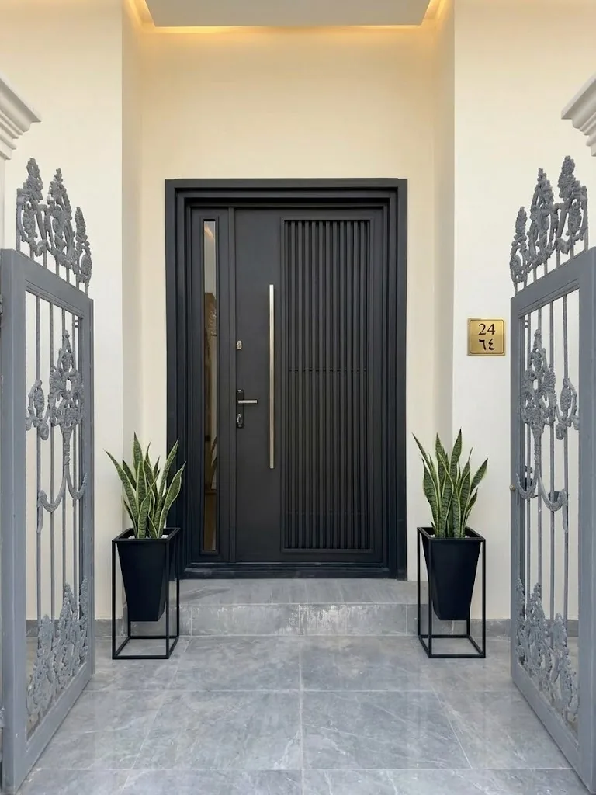
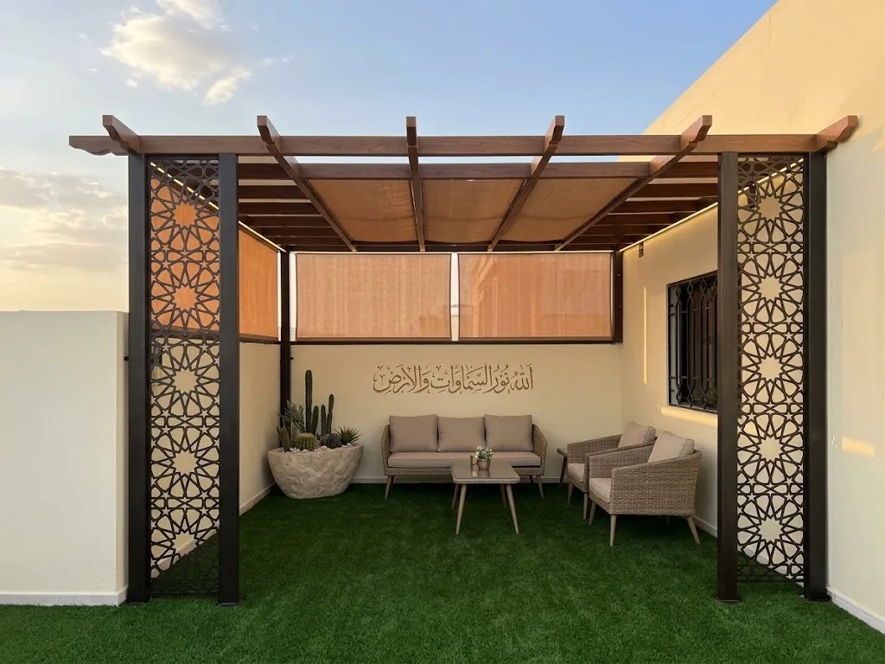
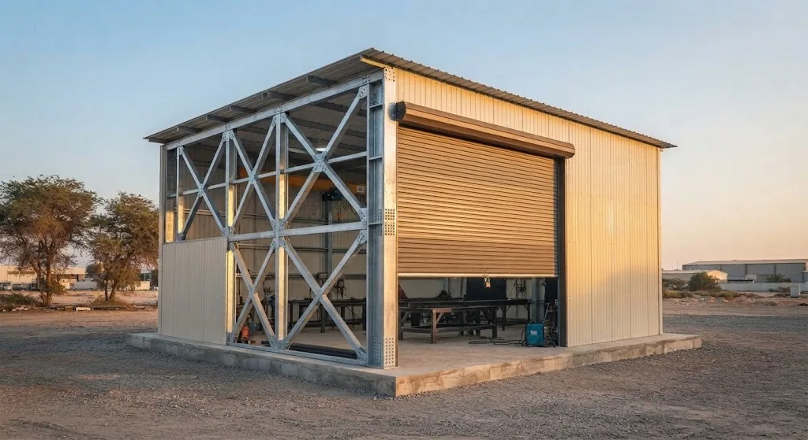
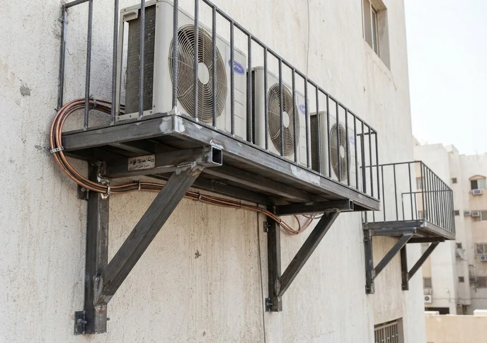

اختر نوع العمل
صفحات خدمات مستقلة وواضحة
توزيع الصفحات يمنع تداخل نية البحث، ويساعدك على الوصول إلى التفاصيل والصور المرتبطة بالطلب نفسه.

01
شبابيك حديد
حمايات وتكوينات حسب أبعاد الفتحة.

02
أبواب حديد
أبواب مداخل بتفاصيل مرتبطة بالاستخدام.

03
سلالم ودرابزين
حواجز ومسارات حديدية للسلالم.

04
برجولات ومظلات
هياكل خارجية للجلسات والساحات.

05
هناجر وهياكل
تغطيات وإنشاءات معدنية للمواقع.

06
ديكور حديد
فواصل وتكوينات معدنية داخلية وخارجية.

07
قواعد مكيفات وخزانات
قواعد تُراجع حسب الوحدة والسطح.